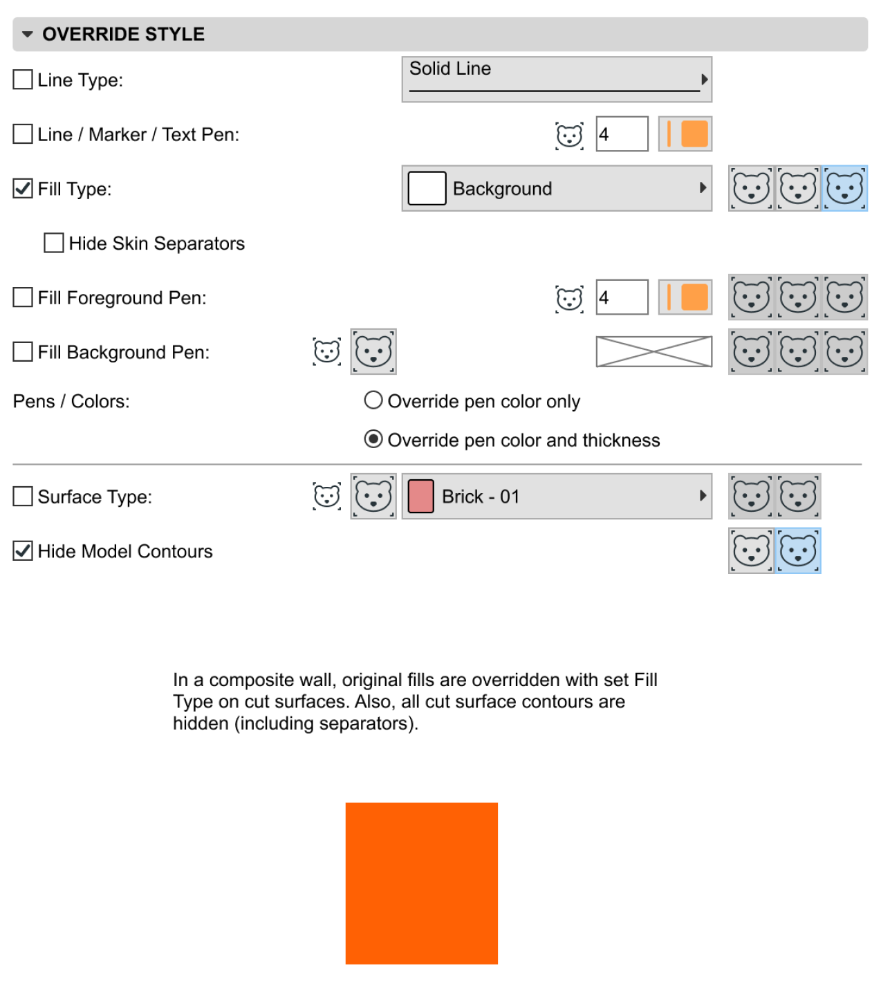
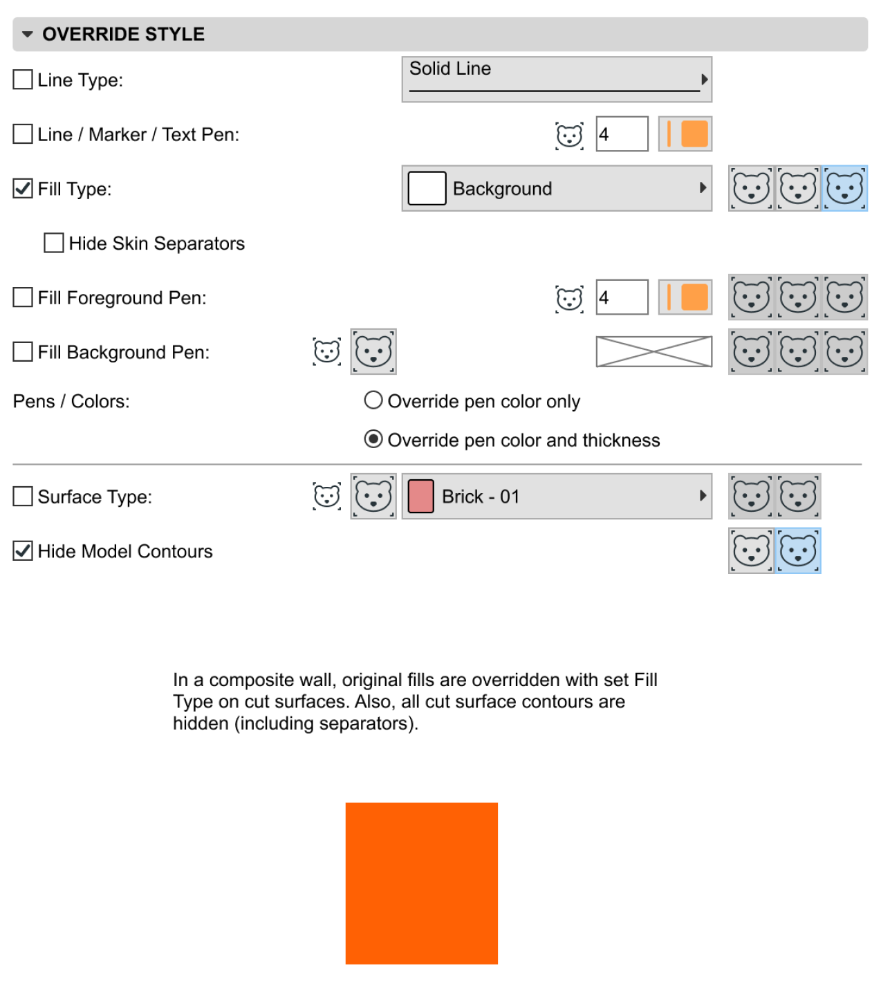

As a new hire, I arrived at the define phase of the project and had been working on it with a senior designer colleague, mostly to learn our processes and methods.
Since the project - actually two bigger epics handled very closely together - took quite some time to wrap up, I gladly took on more and more responsibility in the later phases.
As our users have been diving deeper and deeper in BIM modelling, their documentation methods are getting more advanced day by day. It's not all about the floor plans anymore.
The Zone Tool and its valuable data was originally represented on floor plans, but to catch up on the above mentioned demand, we wanted to extend the editing and display possibilities in different views, such as sections and elevations.
Given a long-standing product with numerous functions connecting to each other on different levels, we also needed to rethink some fundamental changes in these connections. Those might not be particularly perceptible, but were especially important to prepare the structure for future development possibilities.
(or at least some bits of the whole package)

Firstly, let me show you a little video which summarizes our solution.
It was created by our marketing team about the improvements in this project. Even as someone who has never used Archicad before, can have an insight of the complexity of our project.
Undoubtedly, plenty of design and development work have been put into the project behind the scenes.
Let's look at some examples of different connecting areas and situations, which had to be considered and thought out well. All because in the architectural professions the devil's always in the details.
As you may have seen in the video, there's a feature in Archicad called Graphic Overrides. Based on element criterias, model elements in the plan can be overridden with predefined visual parameters. For example: let's say we can paint all elements made of C10/12 concrete material bright yellow for some reason.
One of our many design tasks was to define the behaviour in the so-called override styles, to ensure as many useful possibilities as we could with Zones and of course, other element types.
I instantly turned to rapid prototyping, which was beneficial in so many ways.
I used them to think through the possibilities and their effect on the model, but they were also used for user tests, consultations with the development team and the QA Engineers used them as a reference in their complex test cases.

 

Another great example of the functionality with a thousand faces is the question of collaboration with Zones and their associated Labels.
Architects and users can collaborate on the same plan via our signature Teamwork functionality real-time. This can be ensured by element reservation - the one who reserves the element in question is able to edit, others can just look without touching.
There is also a permission system behind the whole Teamwork functionality, so different permissions can be assigned to architects, draftsmen and other contributors on different levels of authority.
As this is an area where different personas have different needs and at least 3 different factors affect the behaviour in and the circumstances can combine different factors, I thought the perfect way to visualise all cases and the possibilities in all kinds of combination was to gather them all in one place and create a big table.
This way I could be sure I haven't missed anything in the process.
This was my first and most complex project I've worked on so far, which taught me plenty. With such a huge project like this, I think it's crucial to have everyone on the same page with all the details, especially the Product Owner, the Product Designer(s) and the Development Team(s).
We were the most effective when everyone who was involved in a particular story, knew the connections and background of it, so the common goal was clear.
This was guaranteed by our interactive story map, which was always adjusted, so every time we looked at it for clarification, it was up-to-date. Since I joined the project after the initial story-mapping - with other joining colleagues - it was very helpful that we went through the whole map with the team once again, therefore we could ask smart questions and even complement some parts.